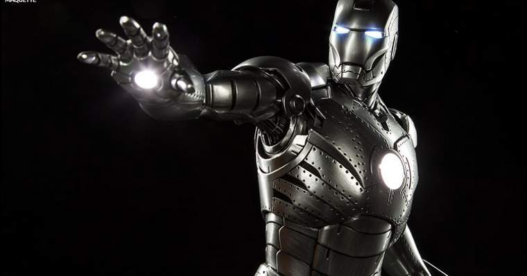

Principais Armaduras
Mark I
Um protótipo feito por Tony Stark quando foi sequestrado pelos Dez Anéis. Tony a construiu quando na verdade deveria estar fazendo um míssil. A armadura foi destruída ao cair no Afeganistão, foi coletada por Obadiah Stane e usada como base para o Monge de Ferro. Mais tarde, Tony a montou novamente e a mantém exibida no Salão das Armaduras.
Mark II
Foi a primeira armadura criada por Tony Stark em solo americano, e foi equipada com tecnologias que não estavam disponíveis para a Mark I. Ela foi usada principalmente para testes até que a Mark III foi construída. Em Homem de Ferro 2, ela passou por modificações e se tornou a Maquina de Combate.
Mark III
Essa armadura é feita primordialmente de ouro e titânio, com uma pintura em vermelho. Ela não possui os problemas de congelamento da Mark II. Após a batalha contra o Monge de Ferro, ela foi exposta no Salão de Armaduras com o nome de “Danificada em Batalha”.
Mark IV
Construída entre os eventos de Homem de Ferro 1e 2, ela foi usada em conflitos internacionais e em grande parte do segundo filme-solo de Tony Stark.
Mark V
Chamada de “Armadura Portátil”, ela é mais leve e possui menos armamentos. Foi feita pra fácil transporte e ostenta as cores vermelho e cinza.
Mark VI
Parecida com as III e IV, esta é a primeira armadura que não utiliza uma fonte de energia a base de paládio. Ela foi usada na batalha final de Homem de Ferro 2 e no início de Os Vingadores.

Mark VII
Uma armadura avançada que não necessita de auxilio mecânico para ser vestida. Ela envolve o usuário devido a um controle em forma de pulseira. Além disso, ela também possui propulsores nas costas, peitos e pernas. Esse modelo tem a forma de um foguete que se juntam em torno do Tony tornando a vestimenta da armadura mais simplificada. O reator circular está de volta nessa versão e todo o arsenal de armas e mais mísseis, laser recarregáveis. A Mark VII consegue aguentar altos danos na batalha, mas não consegue chegar ao espaço sem falhar.
Mark XLII
Tony Stark conseguiu desenvolver uma armadura em que é possível manipula-la a partir de chips que foram implementados em seu braço e permite que ele controle cada peça individualmente. Essa função também permite que ele coloque a armadura em outra pessoa. A armadura também pode ser controlada por um headset que permite que Tony a controle em uma longa distância. Armadura autônoma de propulsão preênsil. Feita da tecnologia da Mark XLI misturada com a tecnologia da Mark V para que cada peça tenha mini-propulsores e voem sozinhas na direção do usuário.
Mark XLIII
Tony Stark prometeu não continuar produzindo suas armadura por conta dos protocolos apresentados em Homem de Ferro 3. No entanto, a Mark XLIII provou o contrário. Esse modelo tem as melhores características da Mark VII e Mark XLII, mesclando a versatilidade de uma com a duração da outra. Uma versão evoluída da armadura Armadura autônoma de propulsão preênsil. Usada em Vingadores: Era de Ultron.
Mark XLIV
Também conhecida como “Veronica” ou “Hulkbuster”, é uma armadura mantida em um satélite e capaz de repor suas peças. A hulkbuster aparece em Os Vingadores: A Era de Ultron. Tony constrói a armadura em parceria com Bruce Banner como um plano de contingencia caso Banner perdesse controle do Hulk. Todas as armas são customizadas para poderem conter Hulk, com sedativos, mãos de britadeira e peças reservas para poder ajuda-lo.
Mark XLV
Esse modelo carrega todos os adereços da Mark XLIII e sua armadura é reforçada com titânio dourado tornando-a mais resistente e brilhante. A maior diferença no design dessa armadura é a forma hexagonal em volto de seu reator. Desde que JARVIS foi usado por Ultron para criar Visão, esse é o primeiro traje do Homem de Ferro a usar seu substituto, Sexta-Feira.
Mark XLVI
Tony Stark usou para lutar contra o Capitão América e Bucky Barnes em Capitão América: Guerra Civil. A armadura possui várias novas funções, como um capacete flexível e vários pequenos reatores arc, além de ser mais simples e adequada ao corpo que as anteriores. A partir dessa armadura temos o sistema F.R.I.D.A.Y. substituindo o J.A.R.V.I.S. A miniatura do reator se espalha por toda parte dando mais poder e ajudando Tony a manipula-la com mais facilidade.
Mark XLVII
A Mark XLVII usada no filme Homem-Aranha: De volta ao Lar também foi inspirada nas histórias em quadrinhos da Marvel. O design, no entanto, é o mesmo usado na Mark XLVI, e sua maior melhoria é a utilização do Wi-Fi na comunicação sem a necessidade de usar um headset. Quando Tony está usando a armadura, FRIDAY está.
Mark L
A penúltima armadura usada por Tony é baseada em nanotecnologia, seus recursos são quase infinitos e só dependem da criatividade de Tony. Ela pode se materializar e se reformular em questão de segundos, criando uma grande variação de misseis, canhões, laminas, escudos, asas, spray congelante. O design é inspirado na própria figura do corpo de Tony. Essa armadura também tem a habilidade de voar até o espaço sem causar nenhum estrago. essa armadura é mais avançada do que qualquer outra e possui várias habilidades diferentes. Além de se materializar, ela pode crias escudos, se reparar instantaneamente, criar canhões repulsores e de prótons, lâminas, liberar nitrogênio, misseis e até mesmo algo semelhante a martelos!
Mark LXXXV
Tony Stark passou os 5 anos após Thanos estragar sua última armadura, criando a Mark LXXXV. Perfeitamente inspirada na clássica armadura criada por Steve Ditko, a última armadura de Tony mistura o formato da Mark L e sua nanotecnologia com a um design mais muscular. Essa armadura é combinação perfeita de todas as anteriores e também possibilitou Tony a lutar contra Thanos e utilizar o poder das seis joias do infinito.